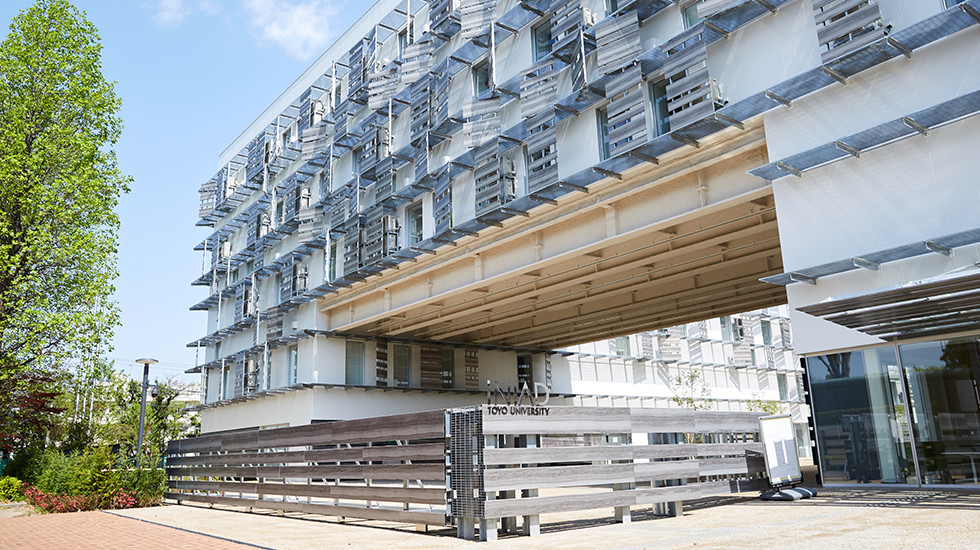
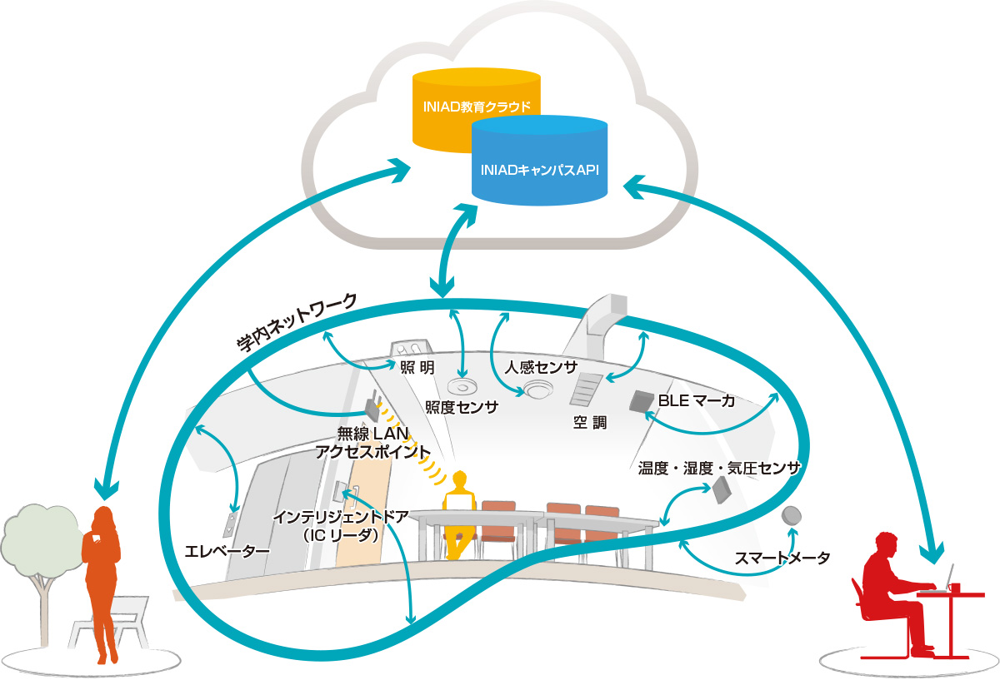

INIADの教育方式
―従来の大教室
従来の日本の大学──特に私学や文系の大学では、教師から学生に一方的に知識を伝える「講義」形式が主流であった。
そのために、より多くの学生を収容できる大教室が効率的とされてきました。 しかし、単に先生が一方的に知識を授けるだけ、学生が受け取るだけでは「連携」にはなりません。
―ネットワークと現場を組み合わせた新時代の教育
ネットワークの時代だからこそ、INIAD では「その場に集うこと」を重視します。
知識を受け取る部分はネットワークのオンライン教育システム「MOOCs( ムークス)」で行います。
いつでも、どこでも、何度でも、納得行くまでブラウザ経由で受講が可能で、演習により自分の理解度も確認できます。
一方、キャンパスではネットワーク上でできないことを行います。
具体的には、教師や、学生同士での討論を中心とした対話中心の授業や、手を動かす実習を行い、オンライン教育システムで得た知識を消化し身に付けることを促します。
多数の小教室中心の構成
対話中心の授業は、大人数では成果が出ません。そこで、INIAD の教室は小教室中心の構成になっています。
また、更に小さいチームルームが多く用意されており、3 年生以降に開始されるチーム実習のための拠点としたり、学内で起業する会社のオフィスとしての利用など、さまざまな利用が可能です。
メディアセンター
ネットが主流になっても、直接顔を合わせてコミュニケーションを取ることの重要性は変わりません。
その対面でのコミュニケーションを助けることを中心に、ネットの中だけでは実現できないメディア機能を提供するスペースが、INIAD の1階の公共スペースに位置するメディアセンターです。
例えば、学生が少人数で集まって、一つの同じ大画面を見てコミュニケーションを取るミーティングスペースがあります。
ミーティングスペースは様々なインテリアで気分を変えられるようになっておりアイデア出しを刺激します。
他のチームとの適度な距離感で、セレンディピティ（予期せぬ幸運な出会い）を演出し、アイデアの掛け算効果を生みます。
小規模なセミナーや討論会を行える小規模のシアタースペースもあります。
一方で、一人でいながら、同時に周囲に人々を感じられる、適度な独立感のパーソナルスペースも多くあります。
クリエーションに疲れたら、近くにはカフェスペースもあります。美味しいお茶とスイーツでリフレッシュどうぞ。
展示エリア
メディアセンターに隣接するスペースは、学生など様々な人が集い、出会う公共スペースとなっています。
展示台などの各種の展示用家具や大型プロジェクター等の設備も用意されており、パネル展示から実物展示、プロジェクター展示などが可能です。
学内で行う講演会に合わせた展示会、演習の作品展示、学内スタートアップの商品発表、さらには大学祭などさまざまなイベントに利用可能です。
IoT化された未来のキャンパス
IoT化された未来のキャンパス 赤羽台キャンパスにあるINIAD は最先端のIoT 技術により、様々な設備や機器をネットワークに接続し、それらをキャンパスの状況に合わせて協調動作することで、人々に最適な環境を与え、使用エネルギーの最適化を図ります。このように設備や機器を空間の状況に合わせて最適制御するというコンセプトは、坂村健学部長（2017年4月就任予定）がプロジェクトリーダーを務めるTRON
プロジェクトの目指すところであり、赤羽台キャンパスにはこの研究成果を取り入れた未来のキャンパスを実現しています。
最先端の空間で学ぶ
研究室には、電灯やエアコンのスイッチはありません。キャンパス内にあるセンサーを利用して環境を自動認識して制御を行い、利用者からの指示はスマートフォンやPC からネットワーク経由で行います。教室や研究室等へはIC
カードやスマートフォンで鍵を開けて出入りします。講義の案内や連絡事項等はキャンパス内に設置されたディジタルサイネージやスマートフォンで知ることができます。
INIADキャンパスAPIでプログラミング実習
赤羽台キャンパスに設置されている様々な設備や機器は、API（Application Programming I nterface, コンピュータプログラムから、他のプログラムや機器の情報を取得したり制御するための約束事を定めたもの）を提供しています。学生の皆さんはAPIを学習し、これを操作するためにプログラミングすれば、このIoT化されたスマートキャンパスを自身に割り当てられたアクセス権限の範囲内で思い通りにコントロールできます。
INIADキャンパスAPIの利用例
プレゼンテーション時に外光が差し込む場合は自動でブラインドを下げて照明を付けます。
IC カードをかざして部屋に入室すると入室した人の好みに合わせた設定で照明・エアコンが動作します。
あらかじめ利用階、目的階をスマートフォンに入力しておけば、荷物を運んでいて両手がふさがっているときでも、エレベーターの前に行くだけで自動でエレベーターを制御して目的階へ移動できます。
コンピューター教育に適したネットワーク環境

キャンパス内にはWi-Fi が整備されていて、情報教育を実施するために十分なインターネット接続帯域が確保されていますので、学生が所有するPCやスマートフォンを持ち込んで、授業や研究に活用できます。
また、クラウドコンピューティング環境としてINIAD 教育クラウドを整備しています。このINIAD 教育クラウドを活用した講義も数多く用意されています。学生の皆さんがINIAD
教育クラウドを自分自身の学習や研究等にも活用できるよう、設備も整っており、また困ったときにはINIADスタッフがサポートします。
建築
建築設備・内装・建築総合プロデュース
坂村 健（さかむら けん）
東京大学大学院教授。情報連携学部等設置推進委員会委員長。IoT 社会の構築を目指すコンピューターアーキテクチャ構築・普及を目指すプロジェクト「TRON」の提唱者でプロジェクトリーダー。
建築設計
隈 研吾（くま けんご）
株式会社隈研吾建築都市設計事務所主宰。東京大学教授。木材を使うなど「和」をイメージしたデザインが特徴的で、2020 年オリンピック・パラリンピックのメイン会場となる新国立競技場のデザインも手掛ける。